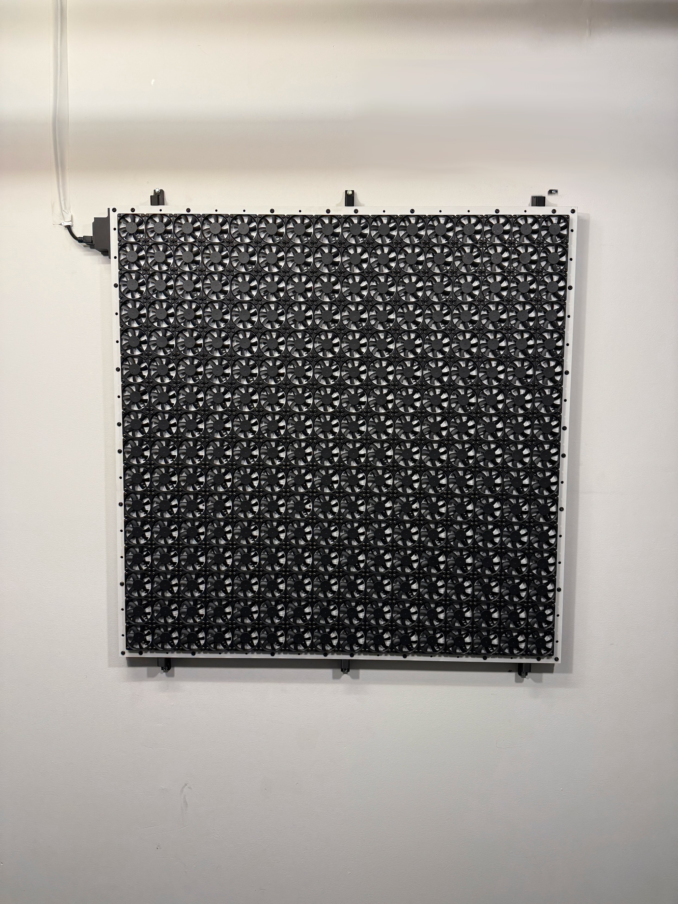
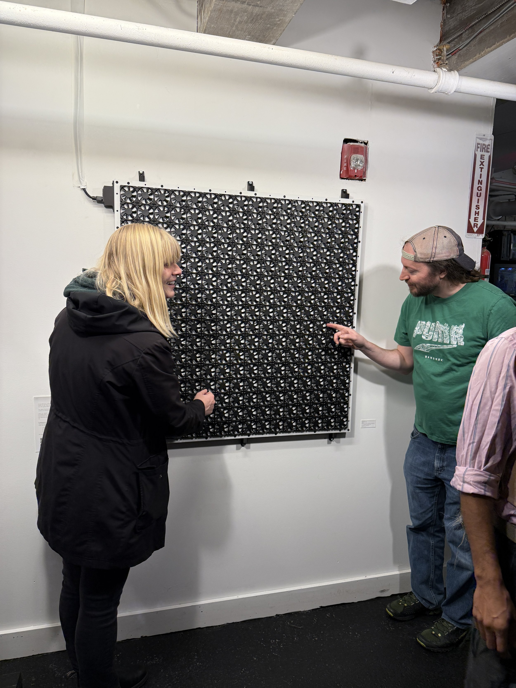
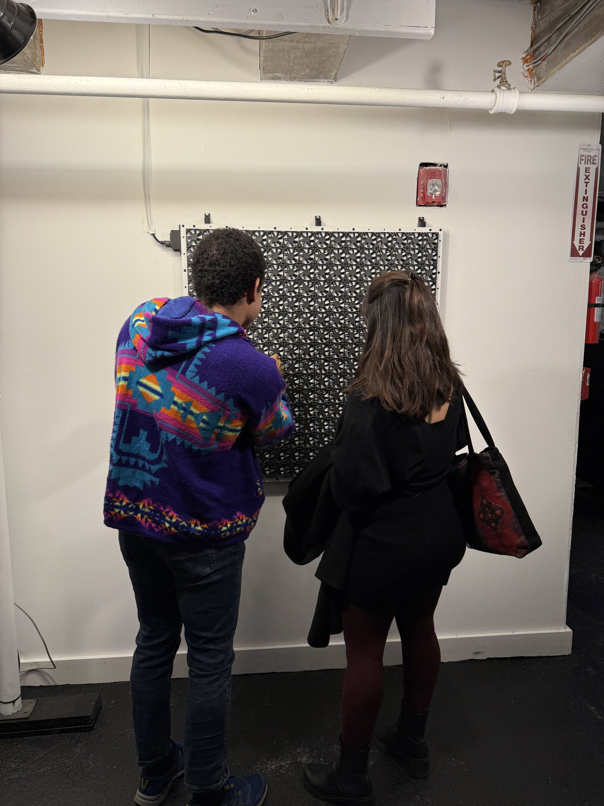
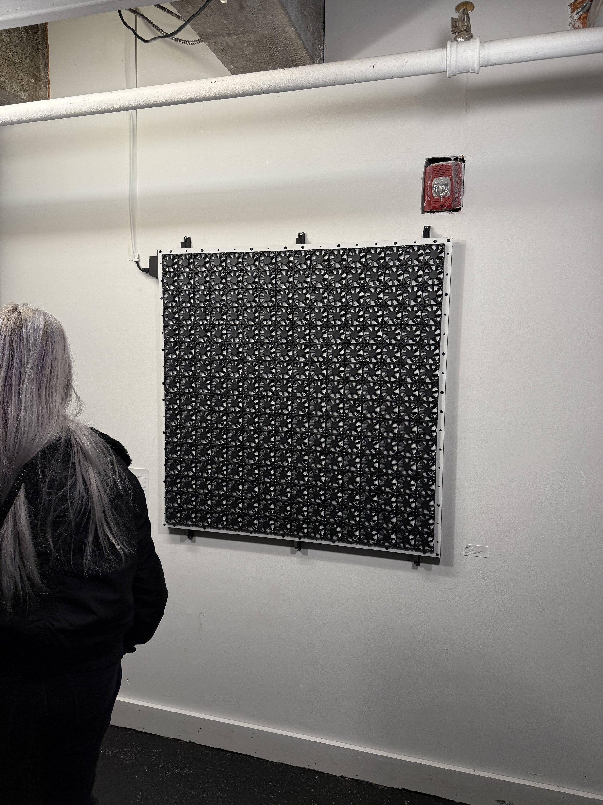
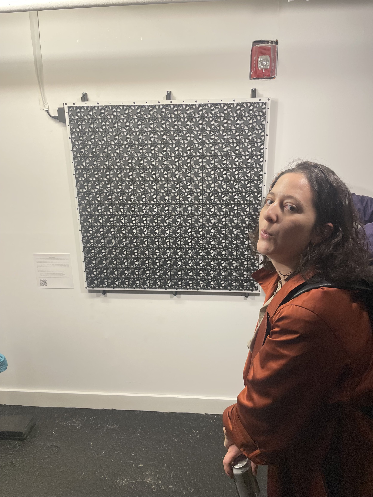
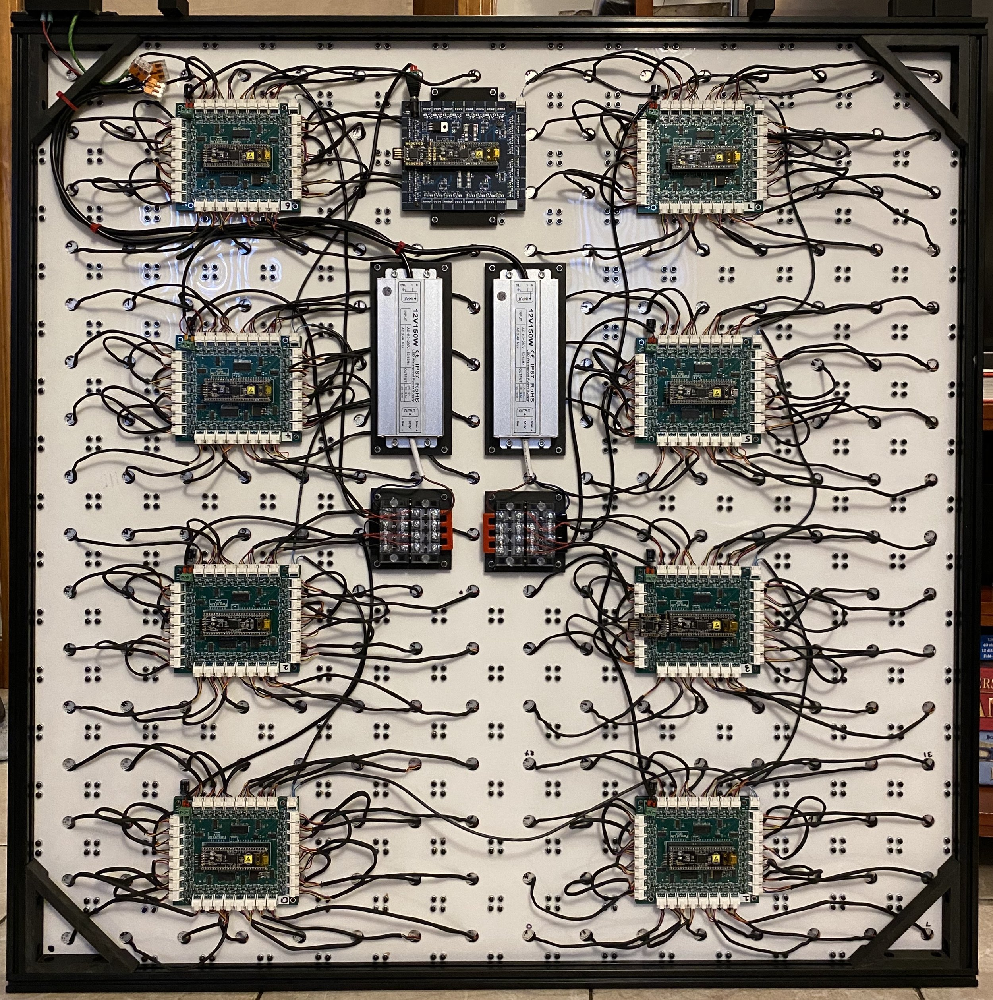

The Fans of Life
Interactive grid of fans playing out Conway's Game of Life.
(See how it works here)
The Fans of Life was on display at New Alliance Gallery's Synth-tember 2024 show from 9/20/24 - 11/15/24.

Using 256 fans, controlled by custom circuit boards and software, The Fans of Life plays out Conway's Game of Life. The viewer is able to edit the current state by spinning or stopping any fan, affecting how the game plays out. The piece illustrates how simple rules can lead to complex and far-reaching outcomes and invites viewers to witness and participate in the spontaneous emergence of intricate patterns.
Just as simple rules of 1s and 0s have created technological marvels and basic biological principles gave rise to the diversity of life, The Fans of Life demonstrates the profound impact of simple interactions. By allowing the viewer to modify the grid it shows how individual actions can influence the outcome and cause significant change, mirroring the interconnectedness found in life all around us.
Explanation of the Game of Life
The Game of Life is a cellular automaton devised by John Horton Conway in 1970.
Cells can either be dead or alive and their next state depends on the following rules:
- Any live fan with fewer than two live neighbors dies (underpopulation).
- Any live fan with two or three live neighbors lives on to the next generation.
- Any live fan with more than three live neighbors dies (overpopulation).
- Any dead fan with exactly three live neighbors becomes a live fan (reproduction).




